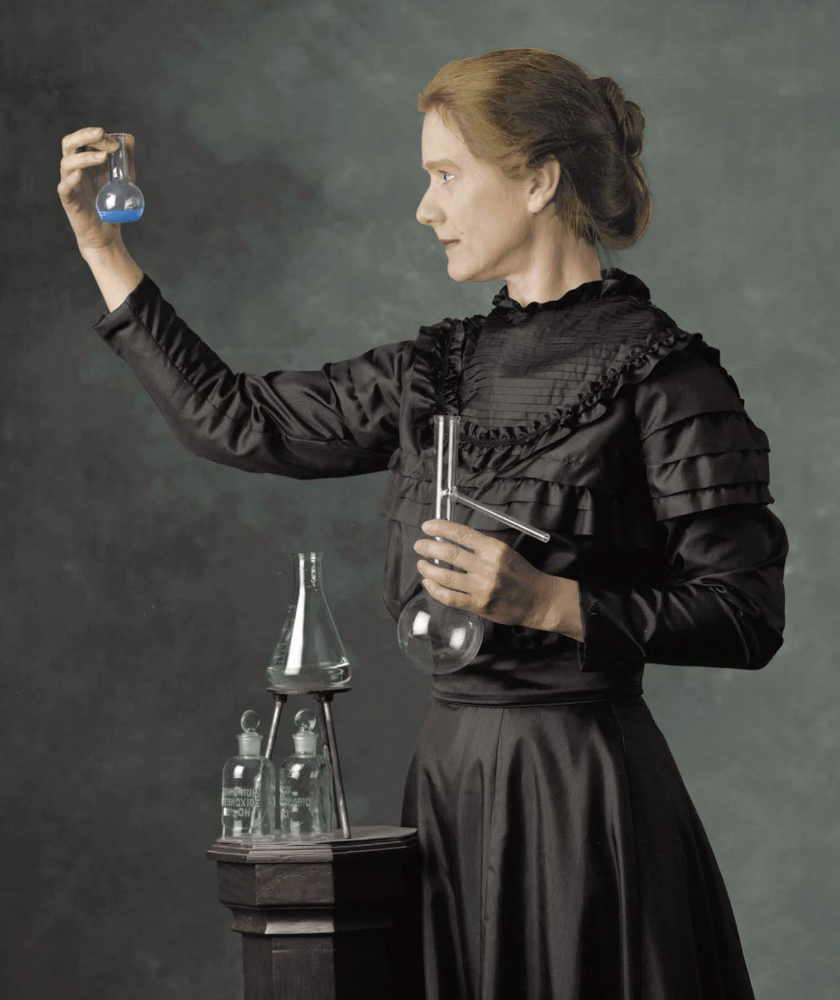
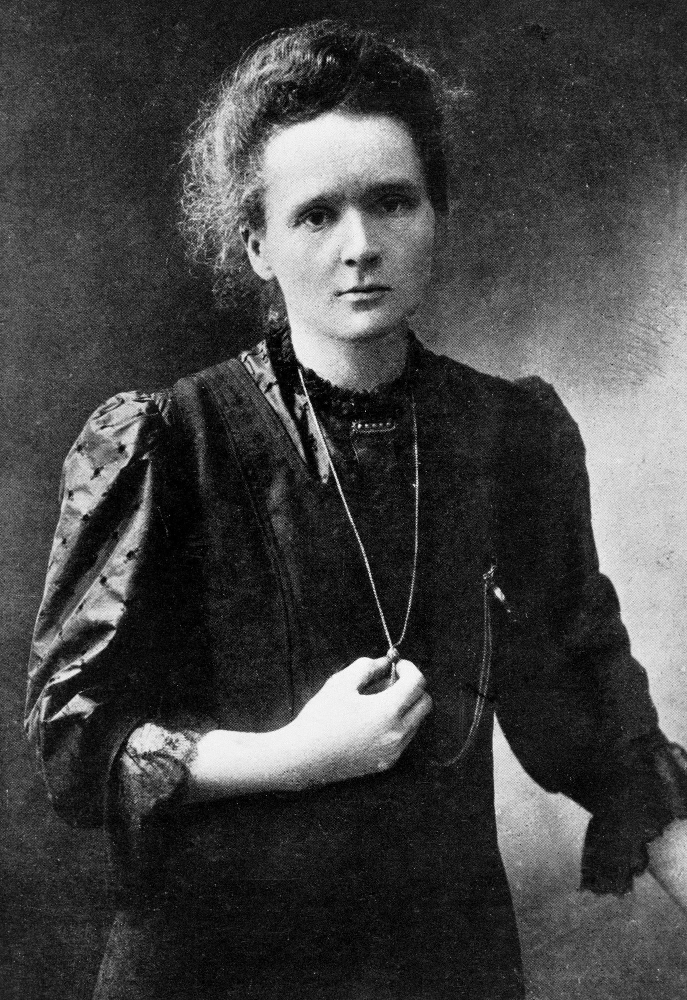

Galería



Científica pionera en el estudio de la radiactividad y ganadora de dos premios Nobel.
Conocer másEn París conoció al científico Pierre Curie, con quien se casó y realizó importantes investigaciones. Juntos descubrieron dos nuevos elementos químicos: el polonio y el radio, lo que representó un gran avance en el estudio de la radioactividad. En 1903 recibió el Premio Nobel de Física junto a Pierre Curie y Henri Becquerel por sus estudios sobre la radiación. En 1911 obtuvo el Premio Nobel de Química por el descubrimiento del radio y el polonio y por sus investigaciones sobre sus propiedades. Marie Curie se convirtió en la primera persona en ganar dos premios Nobel en diferentes áreas científicas. Sus descubrimientos ayudaron al desarrollo de la medicina, especialmente en tratamientos contra el cáncer mediante radioterapia. Falleció el 4 de julio de 1934 en Francia debido a una enfermedad causada por la exposición prolongada a la radiación durante sus investigaciones. Hoy es recordada como una de las científicas más importantes de la historia.
Nace en Varsovia, Polonia.
Descubre los elementos Polonio y Radio.
Recibe el Premio Nobel de Física.
Recibe el Premio Nobel de Química.
Fallece en Francia debido a exposición prolongada a radiación.
Lo obtuvo en 1903 por sus investigaciones sobre la radiación.
Lo obtuvo en 1911 por descubrir nuevos elementos químicos.
Descubrió el Polonio y el Radio.

